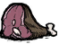
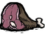
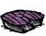
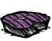
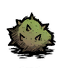
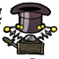
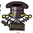

Agora com uma geladeira ( ) em sua base é possível armazenar comida e ingredientes por períodos mais longos (50% amais). É muito recomendado a captura de um pássaro para conseguir ovos. Para capturar um pássaro() é preciso de uma armadilha de pássaro() e uma gaiola (). Pássaros domesticados convertem carne() em ovos, também é possível converter carne de monstro (
) em sua base é possível armazenar comida e ingredientes por períodos mais longos (50% amais). É muito recomendado a captura de um pássaro para conseguir ovos. Para capturar um pássaro() é preciso de uma armadilha de pássaro() e uma gaiola (). Pássaros domesticados convertem carne() em ovos, também é possível converter carne de monstro ( ) em ovos desde que ela esteja cozinhada(). Com os essenciais da base feito (maquinas de pesquisa,cozinha e armazenamento) e algumas plantações fertilizadas a sua base, por enquanto, esta essencialmente “pronta”. Você pode expandir como também decorar ela com pisos conforme desejar, mas não é uma obrigação. Basicamente agora é colher ou caçar comida, coletar recursos de construção para o futuro, explorar partes ocultas do mapa e esperar o inverno chegar.
) em ovos desde que ela esteja cozinhada(). Com os essenciais da base feito (maquinas de pesquisa,cozinha e armazenamento) e algumas plantações fertilizadas a sua base, por enquanto, esta essencialmente “pronta”. Você pode expandir como também decorar ela com pisos conforme desejar, mas não é uma obrigação. Basicamente agora é colher ou caçar comida, coletar recursos de construção para o futuro, explorar partes ocultas do mapa e esperar o inverno chegar.
Quando estiver no fim do outono (dia 15~20) é uma boa hora para colher sementes de arvores temperadas antes que suas folhas caem. Essas sementes () podem ser cozidas na fogueira (
 ) para serem usadas como preenchimento na panela(
) para serem usadas como preenchimento na panela( ). Também é uma boa hora para preparar vestimentas para o inverno como : (
). Também é uma boa hora para preparar vestimentas para o inverno como : ( ) ou (
) ou ( ) e uma (
) e uma ( ). Caso sobre tempo e recursos talvez seja uma boa hora para investir na área da magia(). Para desbloquear a máquina de magia básica (). A magia desbloqueia itens para reviver () e, quando estiver com a máquina avançada (), os melhores equipamentos ofensivos e defensivos do jogo.
). Caso sobre tempo e recursos talvez seja uma boa hora para investir na área da magia(). Para desbloquear a máquina de magia básica (). A magia desbloqueia itens para reviver () e, quando estiver com a máquina avançada (), os melhores equipamentos ofensivos e defensivos do jogo.